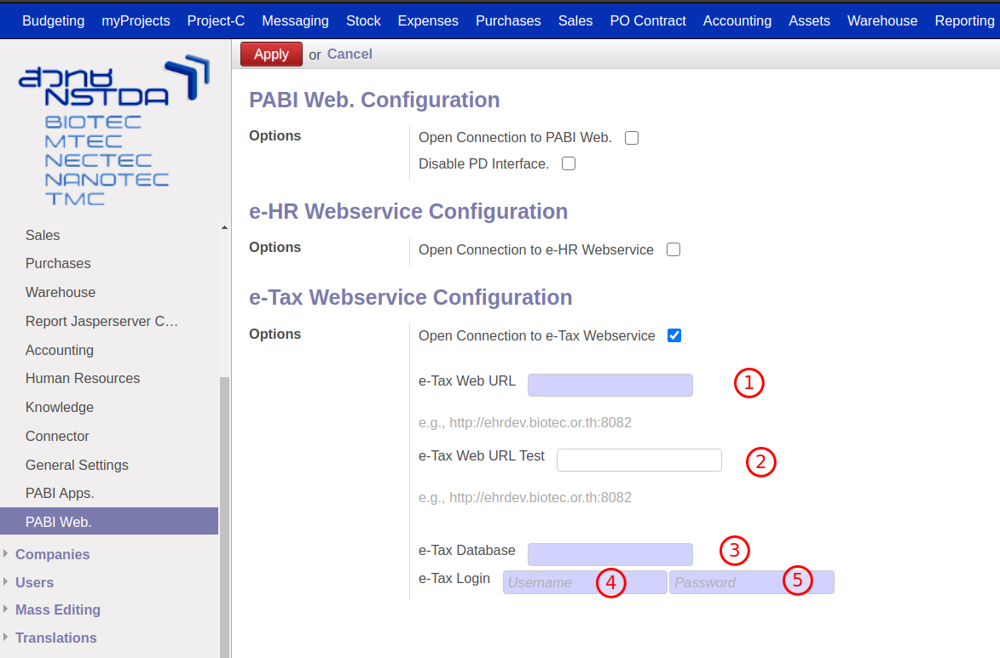

การออกเลข Pre-print ในระบบ¶
เมื่อทำการติดตั้งโมดูล pabi_ir_sequence_preprint ระบบ PABI2 จะสามารถสร้างหมายเลข Pre-print เมื่อเอกสารใบนั้นกำลังจะทำการบันทึกภาษี โดยที่ไม่ต้องใช้หมายเลขจากกระดาษ Pre-print ซึ่งจะมีรูปแบบหมายเลขดังนี้
Receipt Tax Invoice : รูปแบบ RT<ปีปฏิทิน>/<เดือนปฏิทิน>-<หมายเลข 4 หลัก> เช่น RT2563/08-0001
Invoice Tax : รูปแบบ IVT<ปีปฏิทิน>/<เดือนปฏิทิน>-<หมายเลข 4 หลัก> เช่น IVT2563/08-0001
การตั้งค่าระบบการออกหมายเลข Pre-print¶
ไปที่เมนู Settings > Technical > Sequences & Identifiers
จะพบว่ามีเมนูใหม่เพิ่มขึ้นมา คือ Sequence Preprint ให้เลือกเอกสารที่ต้องการแก้ไข

หมายเลข 1 คือ การแสดง <หมายเลข> จำนวนกี่หลัก
หมายเลข 2 คือ การเพิ่มขึ้นของ <หมายเลข> ครั้งละเท่าไหร่
หมายเลข 3 คือ การแสดง <ปีปฏิทิน> เป็น พุทธศักราช (พ.ศ.) หากไม่เลือกระบบจะแสดงเป็น คริสต์ศักราช (ค.ศ.)
หมายเลข 4 คือ การแบ่งการสร้างหมายเลขถัดไป
หมายเลข 5 คือ การสร้างหมายเลขใหม่ทุกๆเดือน หากไม่เลือกระบบจะสร้างหมายเลขใหม่ทุกๆปี
หมายเลข 6 คือ ระยะเวลาในการสร้างหมายเลข เมื่อเลยช่วงระยะเวลา ระบบจะสร้างของเดือนถัดไปให้อัตโนมัติ (กรณีเลือกข้อ 5)
วิธีการเรียกใช้ Pre-print ในระบบ¶
คล้ายกับการเรียก Sequence เดิม คือ เรียกโดยใช้ function next_by_id หรือ next_by_code ได้ โดยจะต้องเรียก module ที่ชื่อว่า ir.sequence.preprint สามารถดูตัวอย่างการเรียกใช้ Pre-print ได้ที่ ./pb2_addons/l10n_th_account_tax_detail/models/account_tax_detail.py ใน function _create_sequence_preprint
การตั้งค่าการเชื่อมต่อในระบบ PABI2¶
เมื่อทำการติดตั้งโมดูล pabi_docsign_interface ให้ไปที่เมนู: Settings > Configuration > PABI Web. จะเห็นว่าในระบบมีการตั้งค่าเพิ่มเติมในหัวข้อ e-Tax Webservice Configuration
ซึ่งจะมีรายละเอียดการตั้งค่าดังนี้
หมายเลข 1 : กรอก URL ของ Docsign Server
หมายเลข 2 : กรอก URL ของ Docsign Server สำหรับทดสอบ
หมายเลข 3 : กรอกชื่อ Database ของ Docsign Server
หมายเลข 4 : กรอก username
หมายเลข 5 : กรอก password
โดยระบบจะเช็คก่อนว่ามีการใส่ URL สำหรับทดสอบหรือไม่ ถ้ามีจะส่งไปที่ URL สำหรับทดสอบ แต่ถ้าไม่มี จะส่งไปที่ URL Docsign Server ปกติ
การตั้งค่าการเชื่อมต่อ Docsign Server ไปยัง i-net¶
หลังจากได้รับ key จริงแล้ว ทาง สวทช. จะต้องมาแก้ไขที่ระบบ Server เพื่อให้ระบบส่งข้อมูลไปให้ i-net โดยมีขั้นตอนการตั้งค่าดังนี้
ไปที่เมนู Settings > Technical > Parameters > System Parameters
ข้อมูลที่ขึ้นต้นด้วย webservice ทั้งหมดจะได้รับจากทาง i-net
ปัจจุบันข้อมูลที่ใช้เป็น webservice ที่สำหรับทดสอบเท่านั้น เมื่อได้รับข้อมูลจาก i-net แล้วสามารถแก้ไขข้อมูลในส่วนนี้ให้ถูกต้อง
การเปลี่ยนฟอนต์ของเอกสาร¶
สามารถเปลี่ยนฟ้อนต์เป็นไทยสารบัญได้โดยมีขั้นตอนการตั้งค่าดังนี้
ไปที่เมนู Settings > Business Documents > Configure Document Layout
เลือกฟ้อนต์ THSarabunNew

การส่งเอกสารในระบบ PABI2 เพื่อลงลายมือชื่ออิเล็กทรอนิกส์¶
เอกสารที่ระบบ Docsign Server รองรับมีทั้งหมด 5 ประเภท คือ
ใบแจ้งหนี้
ใบเสร็จรับเงิน / ใบกำกับภาษี
ใบเสร็จรับเงิน / ใบกำกับภาษี 300% (ในระบบ PABI2 คือ 200%)
ใบลดหนี้ / ใบกำกับภาษี
ใบส่งของ / ใบกำกับภาษี (ส่งจาก mySale)
วิธีการลงลายมือชื่ออิเล็กทรอนิกส์
ไปที่เมนู Accounting > Customers > Customer Payments
ที่หน้าเอกสารจะมี Field เพิ่มขึ้นมาชื่อว่า State Sign เพื่อบอกสถานะการลงลายมือชื่ออิเล็กทรอนิกส์ของเอกสารนั้น ๆ
Print > Print Receipt

ที่หน้า Print จะมีปุ่มเพิ่มขึ้นมา 3 ปุ่มคือ Preview, Sign และ Update Sign
Preview คือ การสร้างเอกสารใน Docsign Server และส่งกลับมาที่ระบบต้นทาง โดยจะไม่มีการลงลายมือชื่ออิเล็กทรอนิกส์ เพื่อให้ผู้ใช้งานเห็นเอกสารก่อนที่จะลงลายมือชื่ออิเล็กทรอนิกส์
Sign คือ การสร้างเอกสารใน Document Server และส่งข้อมูลทั้งหมดไปลงลายมือชื่ออิเล็กทรอนิกส์ ก่อนที่จะส่งกลับมาที่ต้นทาง
Update Sign จะเห็นแทนปุ่ม Sign เมื่อเอกสารนั้นเคยลงลายมือชื่ออิเล็กทรอนิกส์ไปแล้ว ใช้สำหรับการแก้ไขข้อมูลในเอกสารนั้น
เลือกฟอร์มที่ต้องการลงลายมือชื่ออิเล็กทรอนิกส์ ถ้าฟอร์มที่เลือกนั้นไม่สามารถลงลายมือชื่ออิเล็กทรอนิกส์ได้ระบบจะขึ้น Error ซึ่งเอกสารที่รองรับการลงลายมือชื่ออิเล็กทรอนิกส์ สามารถดูได้จากด้านบน

กรณีต้องการดูตัวอย่างเอกสารก่อนลงลายมือชื่ออิเล็กทรอนิกส์จริง สามารถคลิกที่ปุ่ม Preview แล้วระบบจะสร้างเอกสารให้ที่ Attachment File

เมื่อตรวจสอบข้อมูลถูกต้องแล้วสามารถคลิกปุ่ม Sign ได้เลย ซึ่งในระบบจะยืนยันการทำรายการอีกทีหนึ่ง
ถ้าระบบลงลายมือชื่ออิเล็กทรอนิกส์สำเร็จ กรณีมีเอกสารที่เคย Preview ไว้จะหายไป และมีเอกสารที่ลงลายมือชื่ออิเล็กทรอนิกส์สำเร็จมาแทนที่ หากไม่เคย Preview จะพบว่ามีเอกสารไฟล์แนบเพิ่มขึ้นมา ซึ่งจะเก็บในรูปแบบ URL Link
กรณีที่มีการลงลายมือชื่ออิเล็กทรอนิกส์ผิดพลาด ระบบจะแสดงข้อความ Error ประมาณนี้

สาเหตุหลัก ๆ ที่จะทำเกิด Error นั้น ส่วนใหญ่เกิดจากการที่ระบบต้นทางไม่มีข้อมูลบางส่วนที่ docsign server ต้องการ ซึ่งในที่นี้คือ ลูกค้าไม่มีข้อมูลเลขประจำตัวผู้เสียภาษี ก็ให้ไปทำการเพิ่มเลขประจำตัวผู้เสียภาษีที่ลูกค้า แล้วให้ลองอีกครั้งหนึ่ง
อีกสาเหตุที่มีโอกาสเกิดคือ เอกสารที่ทำรายการไม่มี Product และ Product Code มีการเว้นช่องว่างไว้ 1 วรรค ทำให้ระบบ Error ได้
การยกเลิกเอกสารในระบบ PABI2 และลงลายมือชื่ออิเล็กทรอนิกส์¶
ไปที่เมนู Accounting > Customers > Bank Receipts
ที่เอกสารจะมีปุ่มที่ชื่อว่า Cancel Bank Receipt เพื่อยกเลิกใบเสร็จของธนาคาร
ระบุเหตุผลการยกเลิกเอกสาร

ไปที่ Customer Payments > Unreconcile เอกการที่จะยกเลิก field State Sign จะต้องมีสถานะ Signed เพื่อบอกสถานะการลงลายมือชื่ออิเล็กทรอนิกส์ของเอกสารนั้น
ระบุเหตุผลการยกเลิกเอกสาร
ที่ Journal Items จะปรากฏ Cancel Journal Entry ซึ่งระบุ CV ที่ถูกยกเลิก

กดเข้าไปที่หน้าเอกของ CV ที่ถูกยกเลิกไปที่ Print > Voucher

สามารถ Preview และ Sign ได้เช่นเดียวกับการลงลายมือชื่ออิเล็กทรอนิกส์